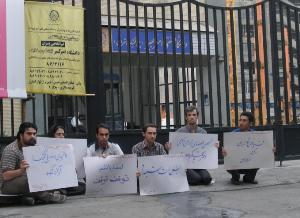
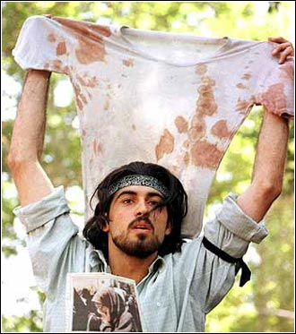
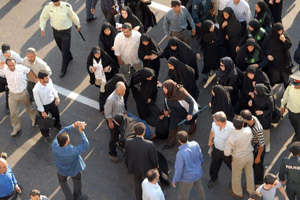
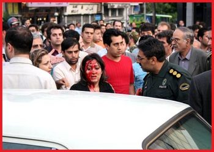
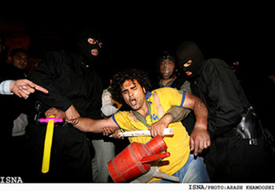
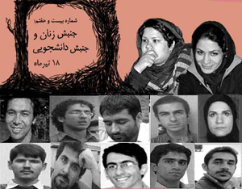

سحرگاه 18 تیر ماه 1386، بار دیگر خلاقیت شورشی، تکانه ای ذهنی بر کالبدهای جامعه منفعلمان می دمد. خبر بازداشت اعضای مرکزی دفتر تحکیم وحدت، بهاره هدایت، محمد هاشمی، علی نیکو نسبتی، مهدی عربشاهی، حنیف یزدانی و علی وفقی به سرعت پخش می شود. آنها پلاکارد به دست نشسته اند روی زمین و درقاب تصویر با ما حرف می زنند. تحصن و تصویر تحصن آن 6 تن در ساعت 6 صبح دربرابر دانشگاه امیر کبیر بازآفرینی خلاقانه واقعیت کوی دانشگاه 1378 در برابر دیدگان فراموشکار است. این بار آنان هستند که به عکس نیروهای فشار بر ذهن ما یورش می برند و از ما می خواهند در برابر انفعال مسری دوران، خلاقانه مقاومت کنیم. ما را وامی دارند که 18 تیر کوی دانشگاه را فراموش نکنیم، ما را وا می دارند تلاش برای آزادی 8 دانشجوی دربند امیرکبیر را از یاد نبریم. آنها بی آنکه تحصن شان را اعلام عمومی کنند، حضور خود را عمومی می کنند تا ترس ها و مصلحت اندیشی ها را به مقابله بخوانند و بیهوده نیست که هزینه این حضور، نه تنها به بازداشت خودشان که به بازداشت 10 عضو دیگر و پلمب دفترادوار تحکیم منجر می شود.
در فضایی که اقتصاد دلالی و زیستن بر مبنای هزینه و فایده، در همه جوانب زندگی ریشه می دواند و در ژستی روشنفکرانه، منش سیاسی دوران می شود و هرگونه هزینه پردازی را - نه به دلیل فشار و سرکوب که به دلیل حفظ منافع اقتصادی، سیاسی و موقعیتی - غیرعقلانی توصیف می کند، و راه بر هر گونه تغییر را به تعویق می اندازد، حرکت آگاهانه آنان نشانه انتخاب آگاهانه شان علیه تقدیرگرایی ساری و جاری است. آنان نه به خاطر قهرمان سازی از خود و نه به خاطر افراطی گری که به خاطر شورش بر انفعال و منفعت طلبی دوران، ذهن ما را می آشوبند.
عمومی کردن حضور آنان در قاب تصویر، حتی بیش از شنیدن خبر تحصن آنان قدرت تاثیر گذاری دارد، شاید به این خاطر که آنان در این تصویر بر تصاویر متعارف دوران خود یورش می برند و ذهن ها را به حرکت وا می دارند. هیچ کس نمی تواند 18 تیر 78 را بدون تصویری از پیراهن خونین در دست احمد باطبی به خاطر بیاورد.

چه کسی می تواند تصویر کشیده شدن دلارام علی را روی زمین، ژیلا بی یعقوب دست بند به دست و ضرب و شتم مظلومانه زنان در 22 خرداد را از یاد ببرد؟

کدام روایت می تواند جایگزین تصویر چهره خونین دختری شود که به خاطر نوع پوشش اش مورد تهاجم پلیس قرار گرفته است؟

کدام روایت می تواند فراتر از تصویر خود به دار آویخته کارگری که اعتراض صنفی اش پاسخ نگرفته روایت گر درد و رنج و و استیصال و اعتراض باشد؟ کدام روایت می تواند خشونت خونین دولتی را فراتر از تصویر مردان آفتابه به گردن تصویر کند؟

کدام روایت می تواند جز تصویر نیمه ی بدن زنی یا مردی در خاک ذهن را از خشونت سنگسار مشمئز کند؟
/ جایی که رسانه های رسمی از افتتاح و استقبال می گویند و اعتراض ها را پنهان می دارند، و یا در شکل عوام فریبانه ، اخبار مخملین! «هشت و سی» 8.30 تولید می کنند تا تحریف و واژگون نمایی را خبرسازی جلوه دهند، این تصاویر سمج و ماندگار که روز به روز بر تعدادشان افزوده می شود چون «کلاه کلمنتیس» چشم ها را می آزارد و لابد خواب ها را هم پریشان می کند. تصاویر دلارام ها و احمد باطبی ها ایجاد ترس می کنند، زیرا هرگز درپس پاسخ های زیرکانه سیاستمداران پنهان و تلطیف نمی شوند، این تصاویر برش هایی از حقیقتی هستند که همواره سعی در مخفی کردن آن می شود، تصاویری که هیچ لبخند توجیه گر رسانه ای و جملات طلایی ورویایی نمی تواند خشونت آشکار موجود در آن ها را پنهان بدارد، تصاویری از واقعیت که ذهن ها را هوشیار می طلبد..
زیر سایه کودتای خزنده
طی چند ماه اخیر حمله ها به افراد و گروه های اجتماعی شدت گرفته است، کودتای خزنده امنیت نرم به حمله های مسلسل وار برای مستاصل کردن ذهن و دامنه عمل فعالان جنبش های زنان، سندیکایی و دانشجویی وحقوق بشر بدل شده که از طریق احضار به دادگاه و صدور حکم های سنگین چون شلاق و حبس و بازداشت های غیرقانونی امتداد یافته و گسترش می یابد. بازداشت هاله اسفندیاری و مممنوع الخروج کردن نازی عظیما، اعلام صدور حکم های غیر منتظره برای فعالان جنبش زنان ، دلارام علی و عالیه اقدام دوست، در بند ماندن 8 دانشجوی دانشگاه امیرکبیر، بازداشت اعضای دفتر تحکیم به همراه شلیک هوایی بسان حمله به خانه های تیمی! و پلمب دفتر این نهاد دانشجویی، بازداشت منصور اسانلو رهبر سندیکای شرکت واحد و امیر یعقوبعلی از اعضای کمپین یک میلیون امضا، از جمله حرکت های پرشتاب منجیان امنیت برای گرفتن مجال تنفس مدنی از فعالان جامعه مدنی بوده است. این حرکت به نظر نمی آید که پایان بیابد. امنیت گران ما خیز برداشته اند تا پیشاپیش، از همین تابستان گرم آغاز کنند و تا 16 آذری فرا نرسیده، تا 8 مارسی در راه مانده، تا نطفه ای برای اعتراض صنفی بسته نشده، تا اندیشه ای برای بهره گیری از فرصت انتخاباتی برای طرح مطالبات مدنی به کار نیفتاده، فرصت حرکت را از ما بگیرند و لابد در یک فضای انتخاباتی کنترل شده برای دیدن تجمع پلیس در روزهای تاریخ ساز جنبش های مدنی به تماشا بایستند!
سایه این امنیت نرم نظامی چنان گسترده است که برای عادت دادن چشم ها به ترس و نظم نظامی، ابزاری به نام مبارزه با «بدحجابی» و «اوباشی» گری لازم است تا قدرت نمایی حافظان امنیت را به منصه ظهور برساند تا اگر گربه ای دم حجله ایستاده است راه خود را برود. وگرنه، مسئولانمان نیز خودشان می دانند که اگر مخالفت با بی حجابی و بعد بدحجابی در سال های نخستین انقلاب حرکتی ارزشی و ایدئولوژیک تصور می شد اکنون حتی برای مجریان کنونی قانون نیز از آن معانی تهی است و برای مخاطبان آنها که غالباً زنان و دختران جوان انقلاب ندیده در عصر آرامش هسته ای هستند، نوعی قدرت نمایی ظاهری و فاقد مشروعیت با پایه های متزلزل ایدئولوژیک است. اکنون هم مجریان و هم خود زنان می دانند که از این برخوردهای قدرت نمایانه نه ارشادی پاسخ می دهد و نه مرشدی تلاش برای قانع کردن می کند. به واقع آن سبو مدت هاست که ریخته و پیمانه اش شکسته است - حتی ماموران اجرایی نیز گاه به جای فرمان گرفتن از دستورات، دستورات را دور می زنند - اما بر این شکسته بسته ها، هم می توان اشتغال زایی خدماتی کرد و عده ای را به کار گماشت و هم می توان دلیلی برای نظامی کردن مداوم فضای شهری یافت. شاید بتوان گفت که بحران آفرینی یک شبه بر سر بنزین و زمینه سازی برای بروز خشم عمومی و به کار گماشتن پلیس برای برقراری نظم تا حدودی تثبیت حضور پلیس در شهر و مراکز عمومی و بیش از آن تلاشی برای مشروعیت بخشی به فقدان مشروعیت بود ..
بی هراسی از پروژه هراس سازی
اکنون ما مانده ایم و این گستره امنیتی در برابرمان. آیا باید بترسیم و عزلت گزینیم یا چون بسیاری که که عرصه برایشان تنگ شد رخت هجرت ببندیم؟ آیا باید وحشت زده شویم از احضار و بازداشت و بازجویی و زندان و تعزیر و تعلیق و شلاق و انتظار حبس های طولانی برای تک تک مان یا در برابر این فضای پرحصار مقاومت کنیم و صدایمان را در عرصه عمومی شنیدار کنیم؟

به تصاویر بازداشت شدگان دانشجویی، زنان و سندیکایی می نگرم، به آرامش و استواری این شجاعان اندک و پرقدرت خیره می شوم. آیا سرکوب و خفقان در همه مواقع پاسخ می گیرد؟ به نظر می آید استراتژی نظام در سرکوب فعالان اجتماعی دیگر چون گذشته عمل نمی کند. در گذشته هر پاتکی بر فعالان جامعه مدنی یا سیاسی ریزشی گسترده در پی داشت، برخی را ناگزیر به هجرت می کردند، برخی را زندانی و دربند، برخی را منزوی در خانه. در واقع، بی مکان کردن فعالان جامعه مدنی در ممانعت از جمع شدنِ مستقل و سازمان یافته ی آنان از جمله هدف های دراز مدت حاکمیت در برابر جنبش ها و نهادهای مدنی بوده است. از بزرگ ترین نوع این حمله ها می توان از حمله به دفاتر گروه های ملی – مذهبی اشاره کرد که به شدت و سیستماتیک دنبال شد. قدرت گرفتن بسیج دانشجویی و محدود کردن فعالیت های انجمن های اسلامی و بعد هم بازداشت مسئولان نشریات دانشجویی، حمله به دفاتر سندیکاها، پلمب کردن دفاتر نهادهای مدنی و اکنون دفتر تحکیم وحدت همه از برنامه های طراحی شده امنیت گران ماست که هربار چون زلزله ای فرود می آید تا حرکتی را خاموش کند. درواقع هر گونه مکانی برای جمع شدن و سازمان دادن به یک جریان، به مثابه تولید تفکر و ثبات و به معنی قدرت تاثیرگذاری، خواب امنیت گران ما را آشفته می کند و ماشین کنترل را به کار می اندازد با این باور که با هر پاتکی عده ای کنار زده خواهند شد و از بزرگ شدن یک جریان نیز ممانعت به عمل می آورند.
به نظر می آید چنین باوری در حکومت داری کلاسیک پاسخ می گیرد و تا حدودی هم با خاموش کردن یک گروه یا دسته یا حرکتی، آرامشی زود گذر برقرار می شود. اما در دوران کنونی که جنبش های مدنی بی مکانی شان را در اتحاد و ائتلافشان با دیگر جنبش ها جبران می کنند و سایه حمایتی شان را بر روح و جان یکدیگر می ریزند، و با عمومیت بخشیدن به خواسته ها، خانواده ها را نیز در گیر مسائل جامعه شان می کنند و آنها را از پاسداری یک خانواده مقدس و منزوی به شکل دادن یک خانواده فعال سوق می دهند؛ دیگر نمی توان از بی مکانی و بی جایی هراسید. اکنون در خانه های ما جنبش هایی برپاست که توقف را در آن جایی نیست. اکنون برخلاف تصور استراتژیست های سرکوب، در برابر سرکوب مداوم، مقاومت مداوم جریان دارد زیرا شدت گیری های خشونت ورزی دولتی وقتی چنین عریان و مستقیم وارد می شود، تاثیر عکس بر عملکرد دولت مشروع می گذارد و ترس ها را به شجاعت تبدیل می کند به همین خاطر دیگر چون گذشته سرکوب مداوم ترس و ارعاب و وحشت مداوم ایجاد نمی کند، این مقاومت آگاهانه و آماده برای پرداخت هزینه بی آنکه خاموش شود هربار از جایی سر می زند.
به تصاویر بهاره هدایت، عبدالله مومنی، دلارام علی، منصور اسانلو، عالیه اقدام دوست...خیره می شوم. آنها را چگونه تعریف کنم؟ فعال دانشجویی، جنبش زنان، سندیکایی؟ یا همه آنها؟ دلارام ها و بهاره ها و مریم ضیاها، اسانلو ها و مومنی ها و... را آیا می توان در یک هویت خلاصه کرد؟ در این هم پوشانی زیبای جنبش های اجتماعی قدرتی بزرگ نهفته است که به ما ایمان و ایستادگی و حرکت می بخشد، اتفاقی میمون که استراتژیست های سرکوب را به استیصال و وحشت می کشد تا سرکوب ها را شتاب بخشند.
به تصاویر خیره می شوم، خلاقیتی شورشی اما مسالمت آمیز، آگاهانه و پرقدرت پیش می رود و «هراس» را به هراس می اندازد. رعبی در میان نیست، گرمی هست و شور و عشقی که جامعه انفعال زده را گرما می بخشد. اکنون برماست که این قلب تپنده را از جریان نیاندازیم.
Archives